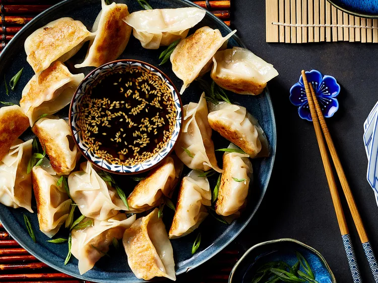

Chinese Pork Dumplings
Home

Description
Few foods capture the essence of Chinese culinary tradition as beautifully as pork dumplings.
Delicate yet hearty, these bite-sized parcels of joy feature a savory filling of seasoned ground pork,
aromatic ginger, and crisp vegetables, all wrapped in a tender, chewy dough.
Whether steamed to silky perfection, pan-fried for a golden crisp bottom, or boiled in a comforting broth,
dumplings are a celebration of flavor, texture, and craftsmanship.
A staple of family gatherings, Lunar New Year feasts, and dim sum tables, they symbolize prosperity, unity,
and the joy of shared meals.
Explore the art of making these irresistible dumplings at home—one delicious fold at a time!
Ingredients (5 serving portions)
For dipping sauce:
- 1/2 cup of soy sauce
- 1 tablespoon seasoned rice vinegar
- 1 tablespoon finely chopped Chinese chives
- 1 tablespoon sesame seeds
- 1 teaspoon chile-garlic sauce
- Optional: 1 teaspoon mirin
Dumplings:
- 500g ground pork
- 3 cloves garlic, minced
- 1 large egg, beaten
- 2 tablespoons finely chopped Chinese chives
- 2 tablespoons soy sauce
- 1 1/2 tablespoons sesame oil
- 1 tablespoon minced fresh ginger
- 50 dumpling wrappers
- 1/2 cup vegetable oil for frying
Steps
-
To make the dipping sauce: Combine soy sauce, rice vinegar, chives, sesame seeds,
and chile-garlic sauce in a small bowl. Set aside.
-
To make the dumplings: Mix pork, garlic, egg, chives, soy sauce, sesame oil, and ginger
in a large bowl until thoroughly combined.
-
Place a dumpling wrapper on a lightly floured work surface and spoon about 1 tablespoon of filling in the middle.
-
Wet the edge with a little water and crimp together forming small pleats to seal the dumpling.
Repeat to form remaining dumplings.
-
Heat 1 to 2 tablespoons vegetable oil in a large skillet over medium-high heat.
Place 8 to 10 dumplings in the pan and cook until browned, about 2 minutes per side.
-
Pour in 1 cup of water; cover and cook until dumplings are tender and pork is cooked through, about 5 minutes.
-
Repeat to cook remaining dumplings, adding more oil and water for each batch.
-
Dig in! (And don't forget the dipping sauce, it makes the dumplings 5 times better.)